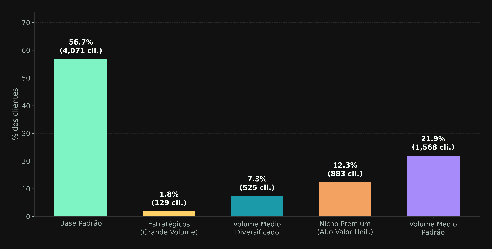
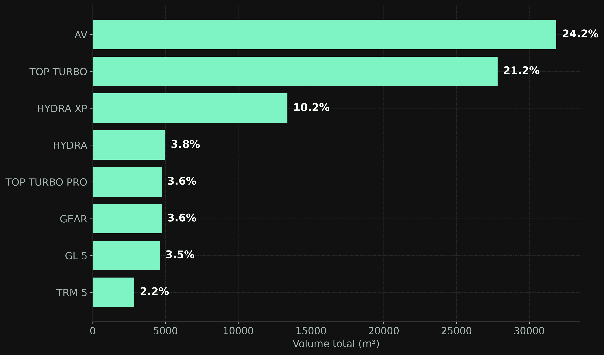
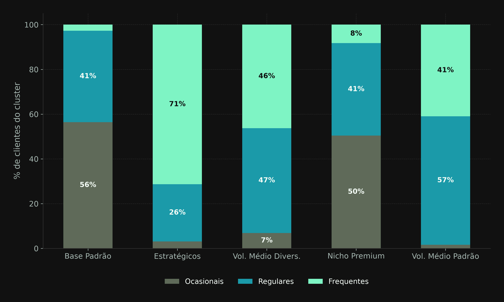
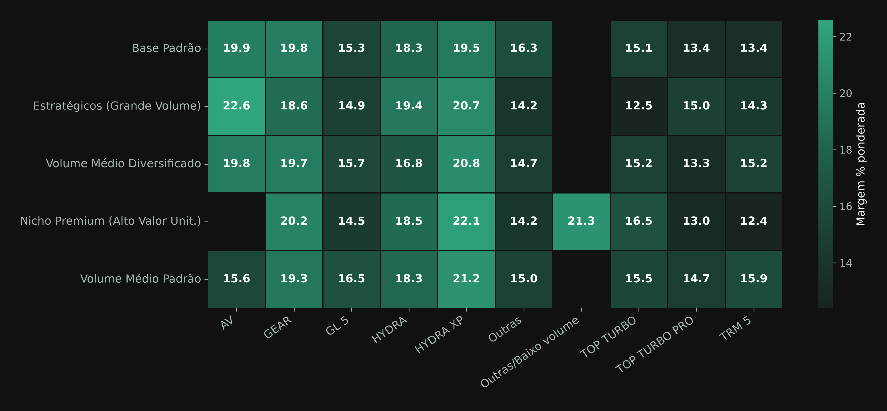
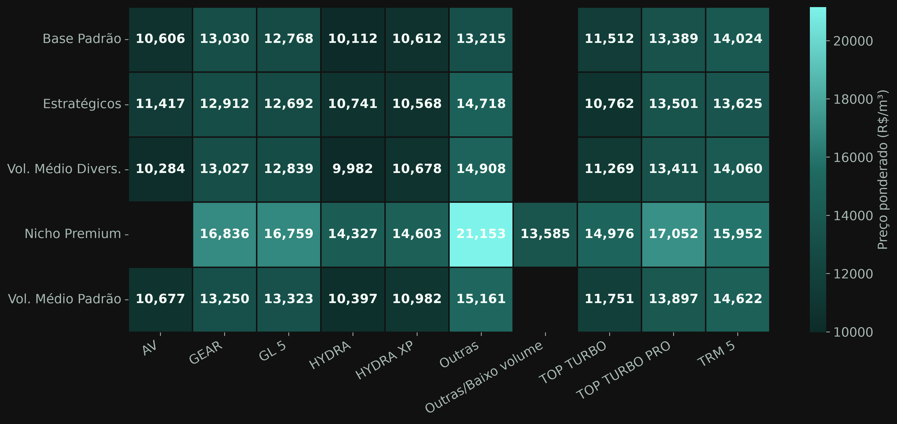
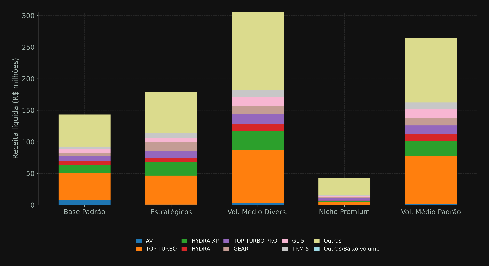
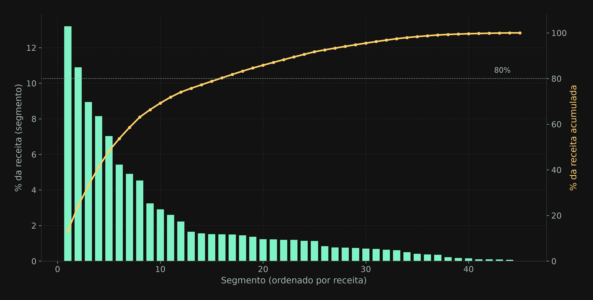

Guia para o time comercial · Setembro de 2026
Este documento explica, sem jargão técnico, o que fizemos para dividir os 7.176 clientes ativos em 5 grupos com perfis de compra diferentes — e como isso pode apoiar decisões de preço, atendimento e promoção. Não é preciso saber nada de estatística ou programação para acompanhar.
Hoje, é fácil pensar nos clientes da Vibra Lubrax como uma massa única — mais de 7 mil empresas diferentes comprando lubrificante. Mas eles não compram do mesmo jeito: alguns compram um volume enorme todo mês, outros compram pouco e raramente; alguns pagam mais por unidade, outros menos; alguns devolvem produto com frequência, outros nunca.
Se conseguirmos identificar grupos de clientes que se parecem entre si, fica mais fácil pensar em políticas diferentes para cada grupo — preço, prazo de entrega, tipo de promoção — em vez de tratar todo mundo com a mesma régua. É esse o objetivo de todo o trabalho descrito aqui.
Clusterização é o nome técnico para "agrupar coisas parecidas automaticamente". Em vez de alguém decidir manualmente "esses são os clientes grandes, esses são os pequenos", um algoritmo olha várias características de cada cliente ao mesmo tempo e forma os grupos que realmente aparecem nos dados — sem ninguém dizer de antemão quais grupos deveriam existir.
Existem várias formas de fazer clusterização. Usamos uma das mais consolidadas e fáceis de explicar, chamada K-Means. O nome vem de "K médias": você escolhe quantos grupos quer (o "K" — no nosso caso, 5) e o algoritmo encontra a média de cada grupo, repetidamente, até estabilizar.
Para comparar os clientes, resumimos o comportamento de compra de cada um em 6 números. Testamos outras métricas também, mas descartamos as que só repetiam a mesma informação de outra forma (por exemplo, "receita total" e "volume total" praticamente contam a mesma história de tamanho do cliente — usar as duas seria contar o mesmo ponto duas vezes).
| O que mede | Explicação simples |
|---|---|
| Volume | Quanto o cliente compra no total, em m³ (1 m³ = 1.000 litros) |
| Preço médio pago | Quanto o cliente paga, em média, por m³ comprado — misturando todos os produtos que ele leva. Não é "ticket médio" (não é sobre o valor de uma compra isolada), é sobre quanto custa, na média, uma unidade de volume para aquele cliente |
| Margem | Quão lucrativa é a relação com aquele cliente, em % da receita |
| Frequência | Quantas vezes por mês, em média, o cliente compra |
| Devolução | Com que frequência os pedidos desse cliente voltam como devolução |
| Diversidade de produtos | Quantos produtos diferentes o cliente compra |
Não acertamos de primeira. Testamos 5 configurações diferentes antes de chegar no resultado final — vale contar essa história porque a primeira tentativa é um bom alerta sobre como números "bonitos" podem enganar.
A primeira tentativa usou uma métrica estatística para escolher automaticamente quantos grupos formar, e o resultado pareceu ótimo nos números. Só que, ao olhar de perto, essa configuração tinha simplesmente separado uma dúzia de clientes com valores muito fora do padrão — e jogado todo o resto da base (mais de 99% dos clientes) num único grupo. Estatisticamente "perfeito", mas inútil para o negócio: não ajuda a diferenciar política de preço para 7 mil clientes.
A partir daí, fomos ajustando: primeiro tratamos esses valores extremos separadamente (sem descartar os clientes, só evitando que eles distorçam o resultado), depois testamos diferentes quantidades de grupos, e por fim adicionamos a variável de diversidade de produtos, que melhorou a qualidade da divisão. O resultado final — 5 grupos — foi o que equilibrou melhor duas coisas: ser estatisticamente consistente e gerar grupos de tamanho útil para o negócio (nenhum grupo gigante demais para ser só "todo mundo", nenhum tão pequeno que vire ruído).
Rodando o método com os 7.176 clientes ativos, chegamos nestes 5 grupos:
Quantos clientes caem em cada grupo

O grosso da carteira. Compra pouco volume, poucos produtos diferentes, raramente. Preço e margem dentro da média geral. É o perfil "cliente comum" — sem nenhum traço que se destaque.
O menor grupo, mas o mais valioso em volume: compram quase 40× mais que a Base Padrão, de muito mais produtos diferentes, com frequência alta. O preço que pagam está em linha com a média — não são "clientes premium" no preço, são grandes e engajados. Candidatos naturais a atendimento dedicado.
Mesmo perfil dos Estratégicos, em escala menor — uma espécie de "estratégico em formação". Bons candidatos a acompanhamento próximo para crescer de patamar.
O único grupo que não se destaca pelo volume, e sim pelo preço: paga, em média, cerca de 40% acima dos demais grupos por unidade de volume. Em compensação, compra pouco, poucos produtos e raramente. Vale a pena entender por que esse grupo paga mais (produto específico? urgência? falta de alternativa logística?) antes de qualquer decisão de preço sobre ele.
Perfil intermediário em quase tudo — nem tão pequeno quanto a Base Padrão, nem tão grande quanto os Estratégicos. A "classe média" da segmentação.
Os 5 grupos acima dizem quem se parece com quem de forma geral. Mas, para virar uma referência prática de preço, cruzamos cada grupo com duas informações a mais: qual família de produto o cliente compra mais, e com que frequência. Isso porque dois clientes do mesmo grupo podem comprar produtos bem diferentes — e isso importa para decisões de preço e estoque.
As famílias de produto mais vendidas (8 famílias já cobrem quase 3/4 do volume)

Como a frequência de compra se distribui dentro de cada grupo

Cruzando os 5 grupos com as famílias de produto, chegamos a 45 combinações (grupo × família) que servem de base para pensar preço de forma mais fina do que "um preço para cada grupo inteiro".
Margem % em cada combinação de grupo × família

Preço médio pago (por m³) em cada combinação de grupo × família

De onde vem a receita de cada grupo, por família de produto

Das 45 combinações grupo × família, a receita não se distribui igualmente — poucas concentram a maior parte. Isso ajuda a decidir por onde começar, em vez de tentar mexer nas 45 de uma vez.
Poucos segmentos já respondem pela maior parte da receita total

Não usamos o preço para prever nada — usamos para descrever o comportamento atual dos clientes, do mesmo jeito que olhamos volume ou frequência. Sem olhar o preço, o grupo Nicho Premium (que hoje paga bem mais que os demais) ficaria escondido dentro do grupo Base Padrão, porque nas outras 5 características eles são parecidos. É o preço que revela esse grupo.
Não. Ticket médio seria receita dividida pelo número de compras (quanto vale uma compra típica). O que usamos aqui é receita dividida por volume — quanto custa, em média, uma unidade de volume para aquele cliente, misturando todos os produtos que ele leva.
Não. São o resultado de uma primeira rodada de análise, feita com dados até setembro de 2026. Comportamento de cliente muda — por isso a recomendação é reprocessar essa segmentação periodicamente (sugestão: a cada trimestre) e comparar se os grupos continuam parecidos.
Testamos diferentes quantidades. Com menos grupos, perdíamos diferenças importantes (ex: o Nicho Premium ficaria escondido dentro de um grupo maior). Com mais grupos, começávamos a criar divisões artificiais, sem diferença prática real entre elas. Cinco foi o número que equilibrou melhor as duas coisas.